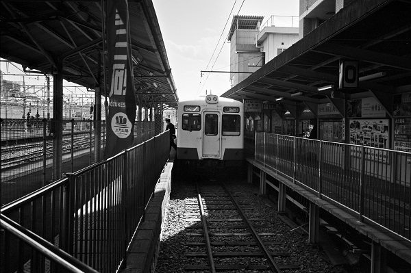
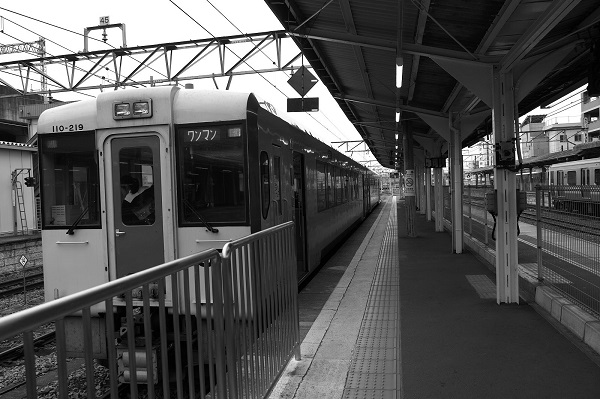

JR_高崎駅 Takasaki
倉賀野駅←← 高崎・上越線 →→ ここまでとする。両毛線 →→ 高崎問屋町駅
倉賀野駅←← 八高線
上信電鉄 →→ 南高崎駅

2019/3/12 ﾐﾉﾙﾀCLE ｽﾞﾐｸﾛﾝ35mm ｱｸﾛｽ

2018/10 ﾐﾉﾙﾀCLE ｽﾞﾐｸﾛﾝ35mm ｱｸﾛｽ

2018/10 ﾐﾉﾙﾀCLE ｽﾞﾐｸﾛﾝ35mm ｱｸﾛｽ

2018/10 ﾐﾉﾙﾀCLE ｽﾞﾐｸﾛﾝ35mm ｱｸﾛｽ

2018/10 ﾐﾉﾙﾀCLE ｽﾞﾐｸﾛﾝ35mm ｱｸﾛｽ

2017/12/15 ﾍｷｻｰRF 35mm ｱｸﾛｽ

2017/12/15 ﾍｷｻｰRF 35mm ｱｸﾛｽ

2017/12/15 ﾍｷｻｰRF 35mm ｱｸﾛｽ

2017/12/15 ﾍｷｻｰRF 35mm ｱｸﾛｽ

2014/12